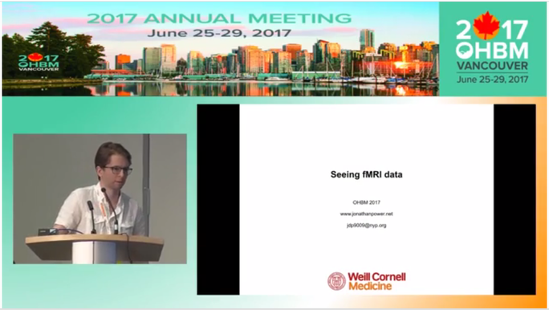
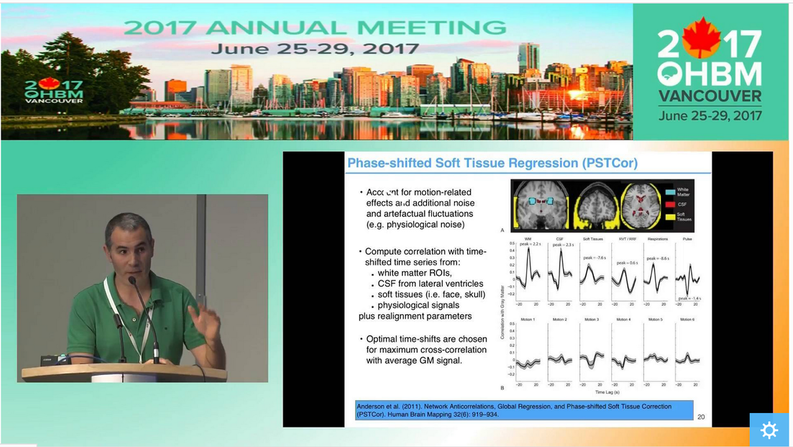
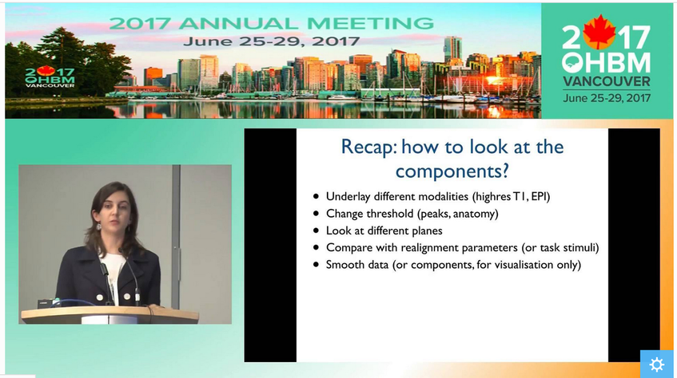
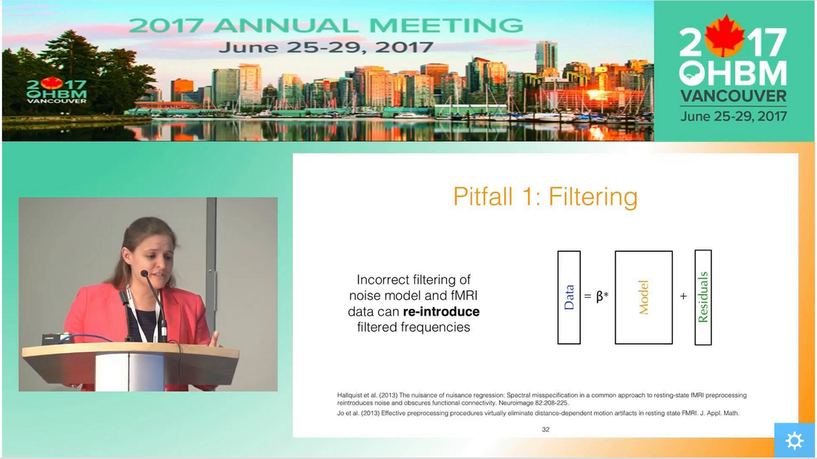
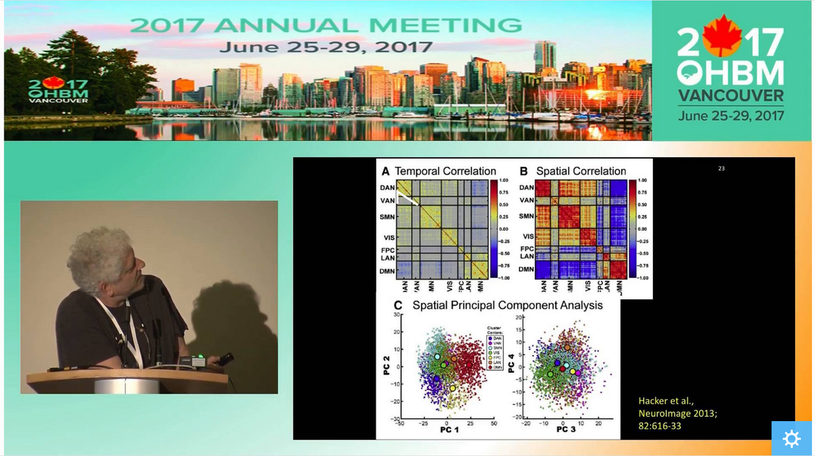
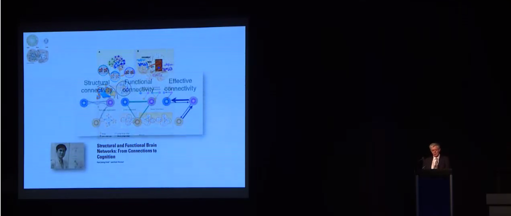

|
By Danka Jandric, Jeanette Mumford & Ilona Lipp Introduction Planning a resting state study and analysing resting state data can feel overwhelming. There seems to be an endless number of options regarding all stages of the experiment. Decisions need to be made about how to acquire data in an optimal way, what preprocessing and noise correction pipelines to employ and how to extract the most meaningful metrics. Many strategies have been published and are available in software packages. However, there seems to be little consensus about what works best and even more importantly, about how to judge whether something “works” or not. The choice of method often depends on the specifics of the data and addressed research question, but can equally often seem arbitrary. To help guide you through this jungle of rs-fMRI, we walk you through all stages of a resting state experiment. We do this by addressing questions that researchers are likely to have… or should have! While we do not provide definite answers to these questions, we try to point out the most important considerations, outline some of the available methods, and offer some valuable video resources from recent OHBM education courses, to help you make informed decisions. What do I need to consider when planning my experiment? Running a rs-fMRI experiment seems easy enough. Technically, all you need is to put your participant in the scanner, tell them to rest and run a standard BOLD sequence. However, it may be worth thinking about your analysis strategy beforehand, so that once you start analysing your data you do not suddenly wish you had…
How do I know my data quality is good? One of the most common questions asked when evaluating data is how to tell if the data are “good” or not. The answer to this question, regardless of the data, is to actually look at your data. Although this task is somewhat easy with behavioral data, when faced with hundreds of thousands of time series for a single subject, it is less clear how we can do this. Luckily Jonathan Power has not only developed tools we can use with our own data but also takes us through data inspection in his educational talk from 2017, “How to assess fMRI noise and data quality”.  Jonathan Green discussing fMRI data quality How do I improve my data quality? fMRI data are noisy and this is not going to change any time soon, so we have to deal with it somehow. Acceptance and hoping for the best is a strategy, but could lead to problems further on in your analysis. If there is a lot of noise compared to the signal of interest, then individual subject’s resting state networks will not look clean, and the power in detecting group-level effects may be low, so you might not find anything interesting in your group-level analysis. However, as importantly, if there are systematic differences in noise sources between the cohorts you are studying, then seemingly interesting effects can be simply a result of group differences in noise, such as head motion. Having ignored the noise problem, you might end up spending days writing a paper with a game-changing title, being hit by reality when the annoying reviewer then asks you to quantify group differences in your noise. Better to be aware of and account for noise to start with, right? But this is easier said than done… What causes noise in rs-fMRI data? Resting state analysis generally deals with correlations in time courses between voxels. If a noise source affects several voxels in similar ways, this can lead to temporal correlations which are independent of neural co-fluctuations. For this reason, the aim of noise correction is to get rid of as much variance in the BOLD signal as possible that is related to noise. To figure out what the best possible noise correction strategy may be, we first have to be aware of what the sources of noise in BOLD time series are. In his video, Cesar Caballero Gaudes gives a comprehensive overview of the most common sources of noise, such as head motion (from minute 05:11), respiratory and cardiac variation (from minute 05:53), and hardware (from minute 11:11), and their effects on the data. Cesar also gives an overview of some of the denoising strategies that are available to tackle different types of noise.  Cesar Caballero Gaudes on noise correction in fMRI How can I correct for noise when I have information about the noise sources? The nuisance regression approach: One denoising approach is to record information about some of the potential noise sources during the scan, such as physiological recordings or head motion parameters. These can then be used to figure out to what extent our BOLD time series can be explained by the noise sources, by including nuisance regressors in a general linear model. Generally, we probably all agree that the more high-quality information we have on what happened during our scan, the better. One may also think that the more nuisance regressors we employ to regress out from our BOLD time series, the better our clean-up… but is that so? In her video, Molly Bright gives us deeper insight into the nuisance regression approach to clean up noise. In some smart simulation analyses (from minute 12:30), Molly shows that simply adding as many nuisance regressors as possible may not be the best strategy, as we may accidentally remove a lot of signal. Also, we need to be careful about time-lagging our regressors in order to account for the delay between a physiological change and the BOLD response. Molly explains why trying to identify that delay using the rs-fMRI data can be tricky, and why adding a breath-hold at the end of your acquisition may be a good idea (from minute 20:16). Molly also demonstrates that very commonly applied preprocessing steps, such as bandpass filtering, can have effects on our data that we might not have predicted (from minute 16:30). While introducing a few strategies to make the nuisance regression approach for noise corrections more valid – such as prewhitening (from minute 12:00) - she stresses the fact that there is not one optimal strategy and that it is very difficult to tell whether noise removal “has worked”. The take-home message here is probably that as a field, we need to work towards a better understanding of the BOLD profiles of different noise sources. Additionally, integrated strategies are needed to deal with the complicated interplay between different noise sources, such as between head motion and physiological noise. How can I correct for noise when I do not have information about the noise sources? The ICA approach: While the success of nuisance regression depends on having good quality nuisance regressors in the first place, data-driven approaches are available that can be applied to any dataset, the most common strategy being independent component analysis (ICA). ICA for noise removal is based on the separation of the BOLD time courses into spatial components, and classifying each component into signal vs. noise. This is typically done on a subject-by-subject basis. The time courses of the noise components can then be regressed out or accounted for during further analyses. Ludovica Griffanti gives a comprehensive introduction to ICA for noise removal and highlights the difficulty that often lies in the signal vs noise classification that is performed by “experts”. Whilst semi-automated and automated approaches are under development in order to make this classification more objective, Ludovica makes the strong point that ultimately these algorithms or at least their validation are based on “gold-standard” manually labelled data. While there is no clear consensus yet on what signal and noise components look like, Ludovica provides us with some guidance and rules that can help with classification and are a first step towards this consensus.  Ludovica Griffanti discussing the use of ICA with rs-fMRI How can multi echo data help with noise correction? The vast majority of BOLD data has been acquired with a single echo time, optimised to the average T2 across grey matter. However, if you have not started your experiment, you might want to acquire data with several echo times. Prantik Kundu explains why: BOLD and non-BOLD related signal have different sensitivity to echo time, so having information about the actual decay can help distinguish signal of interest from noise (from minute 05:10). Prantik provides a few beautiful examples on how multi-echo fMRI data can be combined with ICA-based approaches for noise clean-up, calculating parameters that objectively inform about how similar the components’ behaviour is to BOLD vs non-BOLD related signal (from 11:43). In the grand scheme of things, the multiple echo times used are still quite short, so acquiring this extra information would not necessarily increase your total acquisition time. On a side note, even data from one additional short echo time can provide information about some noise sources, as described in a study by Bright and Murphy (2013). Be aware that certain noise sources, such as slow physiological changes yield ‘BOLD-like’ noise (which we can treat as noise or as signal of interest, depending on our perspective), as they interact with the cerebrovascular system. Multi-echo data does not help with correcting for this type of noise. Why go through all that pain? Can I not just do a simple global signal regression for noise correction? A cheap and easy (and still very widely used) way for performing ‘noise correction’ is global signal regression. Here, the average signal across the whole brain (or all gray matter voxels or all cortical voxels) is calculated and regressed out from each voxel time series, with the underlying assumption that the global signal mostly reflects combined noise from various sources. The advantage of this approach is that it is able to remove artifacts that are hard to get rid of with other noise correction methods. However, global signal regression is highly controversial in the field, with the main points of criticism being that the global signal has neuronal contributions and that global signal regression shifts the correlation coefficients and induces negative functional connectivity. In her video, Molly Bright briefly touches on this (from minute 24:43), and refers to a recent 'consensus paper'. An alternative to regressing out the global signal are using the signal from white matter or CSF, as briefly described in Cesar’s video (from minute 20:00). If you are interested also see his recent paper. How should rs-fMRI data be preprocessed? Resting state fMRI data can largely be preprocessed in the same way as data from a task-based fMRI acquisition (for a refresher on steps we recommend the slides from the educational course from OHBM 2016). As Molly pointed out, some of the “standard” preprocessing steps, such as bandpass filtering, can have unexpected effects on rs-fMRI data. As rs-fMRI data does not have strong task-driven signal changes, it is generally more susceptible to noise and probably to anything we do to the data, so be wary of that. As described above, there are strategies for tackling noise, such as physiological artifacts, in the preprocessing pipeline. Some good pointers, including Cesar Caballero Gaudes’s video on denoising, have been outlined in the previous section. In addition, in 2016 Rasmus Birn, an expert on the influence of physiological noise on the BOLD signal, gave a thorough overview of physiological noise and approaches to remove it.  Molly Bright discussing the preprocessing of rs-fMRI data How can I analyse the data to find meaningful resting state networks? Once your data is preprocessed, denoised and you are confident that it is in good shape, you will want to get on with the exciting part – identifying resting state networks. When done properly, resting state data can show us large-scale networks in the ‘brain at rest.’ What defines them are the correlated temporal patterns across spatially independent regions. Each network has a distinct time course from other resting state networks, but one which is consistent across its regions. The aim of rs-fMRI analyses approaches is to use the time courses of brain regions to decompose the brain into resting state networks. Several techniques exist, with the two most common being seed-based correlation analysis (SCA) and independent component analysis (ICA). In his video, Carl Hacker gives a nice overview of both SCA and ICA. He introduces the two methods (from minute 1:12) and identifies the main differences between the approaches (from minute 4:15). Carl also discusses how to identify RSNs from seed-based mapping (from minute 6:25), and how the brain can be parcellated using ICA (from minute 13:35). While SCA uses the time series of an a priori selected seed region in order to identify whole brain functional connectivity maps of that region, ICA decomposes data from the whole brain into the time courses and spatial maps of the resting state signals, called independent components (ICs). SCA is a useful method to answer questions about the functional connectivity of one specific region. However, the drawback is that it only informs about connectivity of this region. On the other hand, the numerous ICs that you get from ICA are defined as a collection of regions which have maximal spatial independence but co-varying time courses, thus showing networks across the whole brain that have synchronous BOLD fluctuations when the brain is not performing a task. In healthy subjects, SCA and ICA have been shown to produce moderately corresponding functional connectivity information, and the choice between them is likely to be guided by the specific research question. Note that the focus of Carl’s video is parcellation of the brain. However, many concepts and principles also apply to other types of analyses. Read more about these two methods in Cole et al. (2010) and Smith et al. (2013). How do I interpret ICA components? If you have run ICAs on your resting state data, your next task will be to interpret the output. The output consists of a number of spatial maps showing regions with spatial independence but co-varying time courses, called independent components (ICs). How many ICs you get depends on the parameters you set when you run the ICA, but it is typically a few dozen. The first step when interpreting the ICs is to determine whether they are signal or noise. Because ICA is data-driven, it does not ‘filter out’ noise, but it can separate neural signal from non-neural signal, i.e. noise, so it is important to classify the components correctly as either signal or noise. So how do I distinguish between signal and noise in extracted ICs? In her video, Ludovica Griffanti discusses how RSNs and noise can be distinguished. She provides an overview of component classification approaches, including manual and automatic classification approaches (from minute 2:58). Importantly, Ludovica describes the characteristics of signal and noise components and gives examples of both (from minute 5:20). Ludovica’s key message is that the aim of classification is to retain as much signal as possible, so if you are unsure if a component is signal or noise, keep it in as signal. She also makes the point (from minute 19:00) that a number of factors relating to participants, MR acquisition and preprocessing affect IC characteristics and discusses these briefly. The classification approach discussed in Ludovica’s video is very similar when classifying ICA outputs from single-subject data and group level ICA, but there are differences. For an outline of these and for a more thorough discussion of manual classification of ICA components, please see Griffanti et al. (2017). How do I identify RSNs from ICs classified as signal? There are a few approaches to determining what networks signal components correspond to. Some ICA toolboxes will have spatial templates that can be compared to the ICs. But perhaps the most common approach is manual labelling based on known anatomy. The spatial patterns and time courses of many common resting state networks (RSNs) have been described. (e.g. for labelling RSNs from group-level data see Beckman et al. (2005) and De Luca et al. (2006)). A further option for IC classification is the use of automated RSN classification techniques. In his video, Abraham Snyder gives an overview of how machine learning can be used to classify RSNs based on pattern recognition (minutes 28:50-33:00).  Abraham Snyder discusses using machine learning methods to classify resting state networks What is this thing called dual regression? ICA is typically done with group data and produces spatial maps that reflect the group average functional connectivity. However, the individual variability of IC topography is often useful, for example to make comparisons between groups of individuals. A process called back-reconstruction is therefore used to obtain the individuals’ time courses for the ICs obtained from the group-level ICA, which are then correlated with each voxel to obtain subject-specific spatial maps. Dual regression is one available back-reconstruction method. In his video, Carl Hecker gives a brief overview of how it works (from minute 19:38). If you are interested, Erhardt et al. (2011), describe the principles of several back-reconstruction methods, including dual regression. What metrics can I extract from the rs-fMRI analyses? Local activity metrics: Even before running a network analysis on the rsfMRI data, such as SCA or ICA (see above), two useful metrics can be derived from the data, ALFF and ReHo. Amplitude of Low Frequency Fluctuations (ALFF) measures the magnitude of low frequency oscillations (0.01-0.1 Hz) in the BOLD signal in neural regions. The fractional ALFF, a complementary metric, is a measure of the contribution that a specific low frequency oscillation makes to the whole frequency range recorded. Both metrics give a measure of the amplitudes of brain activity in specific regions. However, the interpretation of these measures is difficult. Fractional ALFF has been shown to be dependent on the vascularisation of the brain, similar to the resting-state fluctuation amplitude (RSFA), which is a very similar measure to the ALFF, and available from any rs-fMRI scan, but has often been interpreted differently. Physiological mechanisms, including vascular effects, in rs-fMRI are still not fully understood and the exact interpretation of measures linked to cerebrovascular characteristics is therefore more difficult. The other common rs-fMRI metric is that of regional homogeneity, or ReHo. ReHo is a voxel-based measure of regional brain activity, based on the similarity of the time-series of a given voxel and its nearest neighbours. It quantifies the homogeneity of adjacent regions, to provide information about the coherence of neural activity of a specific spatial region. Thus, both ALFF and ReHo give information about regional neural activity and have been shown to have high values in, for example, the default mode network regions during rest, indicating that they can point to the regions that play central roles in resting state networks. Because they provide information about regional neural activity at rest, both ALFF and ReHo can be used to determine an ROI for SCA. Functional network metrics: However, ALFF and ReHo are metrics of local neural activity, and are thus limited in their ability to provide information about large resting state networks. Network analyses therefore tend to focus on functional connectivity measures. SCA and ICA, discussed above, both offer measures of functional connectivity within the brain. Both calculate the correlation of time series between voxels in the brain to produce spatial maps of Z-scores for each voxel. These scores reflect how well the time series of each voxel is correlated with the time series of other voxels and are a measure of functional connectivity. In SCA, the Z-scores reflect the correlation of each voxel with the average time course of the seed voxel, while in ICA the Z-scores reflect the correlation of each voxel with the average time series of the respective IC. Dual regression can be run with both SCA and ICA to enable the investigation of individual and group level differences of functional connectivity. A good overview of the metrics described above is provided in Lv et al. (2018). A more recent metric derived from rs-fMRI data is that of functional homotopy. Functional homotopy shows the synchrony of spontaneous neural activity between geometrically corresponding, i.e. homotopic, regions in the two hemispheres. It provides a measure of connectivity between corresponding interhemispheric regions, and can be used to determine regional versus hemispheric information processing. Chao-Gan Yan asks whether these different measures of resting state functional connectivity show unique variance, and discusses the concordance among some of these metrics and also global connectivity (a graph theory measure, please see the next section), by drawing on work from his research group. It is important to remember that most measures of resting state functional connectivity are based on correlational analyses and thus do not tell us anything about how regions of the brain influence the activity of other regions. It is possible to model the relationships between observed patterns of functional connectivity to be able to draw inferences about such neural influences, in an approach called effective connectivity, which is determined with Dynamic Causal Modelling. In his video, Karl Friston describes how we can use effective connectivity to infer causality from observed connectivity (minutes 0:57 to 23:07).  Karl Friston discussing the theory behind dynamic causal modelling How can graph theory be applied to resting state data? More advanced metrics can be derived from rs-fMRI data using graph theoretical analysis approaches. Graph theory is a mathematical method for mapping all the brain’s connections by depicting them as a graph consisting of nodes and edges. When graph theory is applied to rs-fMRI data, the nodes are often large-scale brain regions, and the edges represent the functional connectivity between them. The great advantage of graph theory over other measures of functional connectivity is that it offers a way to quantify the properties of large, complex networks. Alex Fornito gives an excellent introduction to graph theory in his video. He discusses the rationale for using graph theory (minutes 0:55 to 3:39), before going on to give a history of graph theory (minutes 3:39 - 11:54). Then, Alex describes how network models can be created and shown as graphs (minutes 11:54 to 16:53), with a focus on defining nodes and edges. He describes how edges can be defined using fMRI data, including the potential problem of relying on the time series correlations that underpin functional connectivity (minutes 19:16 - 24:43). Finally, the construction of the graph is described (minutes 24:43 - 28:55). Alex Fornito discusses several approaches to defining the nodes of a network. One of these is parcellation of the brain. The brain can be parcellated from rs-fMRI data through either SCA or ICA, as described by Carl Hacker. Once a functional connectivity matrix has been created, either from brain parcellation or the components obtained from ICA, there are two options for deriving metrics. The first is to simply compare the functional connectivity matrices between two or more groups of participants. This approach can provide useful information about how the variable of interest, such as a disease, affects the connectivity between or within resting state networks, and has been used to characterise functional connectivity in diseases such as schizophrenia and autism. The other option is to create a graph from the functional connectivity matrix and study it with graph theory. However, because functional connectivity matrices show correlations between the time series of defined brain regions, either approach is potentially susceptible to spurious or weak connections, for instance due to noise. One way to address this is to apply a threshold that removes the connections that fall below that threshold. Andrew Zalesky gives an introduction to network thresholding and an overview of how it is performed between 0:00 and 16:40 minutes of his video. He also provides an overview of the type of measures that can be extracted from brain graphs, with a focus on comparisons of edge strength (minutes 16:40 to 19:36). Some regions of the brain are more strongly connected with others, and tend to be considered network hubs. Metrics related to network hubs are among the most commonly used in graph theoretical analysis. Martijn van den Heuvel discusses network hubs and the metrics associated with them (from about 1:30 minutes). An extensive list of graph theory metrics and what they tell us about neural networks can be found in Rubinov and Sporns (2010). For those interested, there is a small collection of videos on graph theory from last year’s presentations at the OHBM conference, including those discussed in this post. What do the resting state networks actually show? How do you interpret findings from your resting state analysis? Well, first, it is important to consider the biological function of the correlated temporal patterns. Unfortunately, it is not as simple as defining it as ‘activity during rest.’ RSNs are collections of brain regions that have synchronous BOLD fluctuations, but the source of the signal has not been unequivocally established. While there is strong evidence to suggest that the signal is neural, there is still ongoing debate about the extent to which it may be influenced by non-neuronal noise, such as respiratory and cardiac oscillations. However, the fact that rs-fMRI analysis results have been reproduced even when applying conservative physiological corrections across both individual subjects and groups points to a largely neural basis of the rs-fMRI signal. So what does the functional connectivity mean? In purely methodological terms it is the statistical correlation of two time series. It has been suggested that such correlations have arisen as a result of neural populations that are active together to perform a task and have therefore ‘wired’ together. The rs-fMRI signal reflects their spontaneous neural activity in the absence of a specific task. There may be direct anatomic connections between networks derived from rs-fMRI analyses, or another joint source of the signal. This is currently not well understood, and rs-fMRI findings should be interpreted with caution. A short, but good, outline of the origin of the rsfMRI signal is provided in van den Heuvel et al. (2010).
0 Comments
Your comment will be posted after it is approved.
Leave a Reply. |
BLOG HOME
Archives
October 2022
|
 RSS Feed
RSS Feed